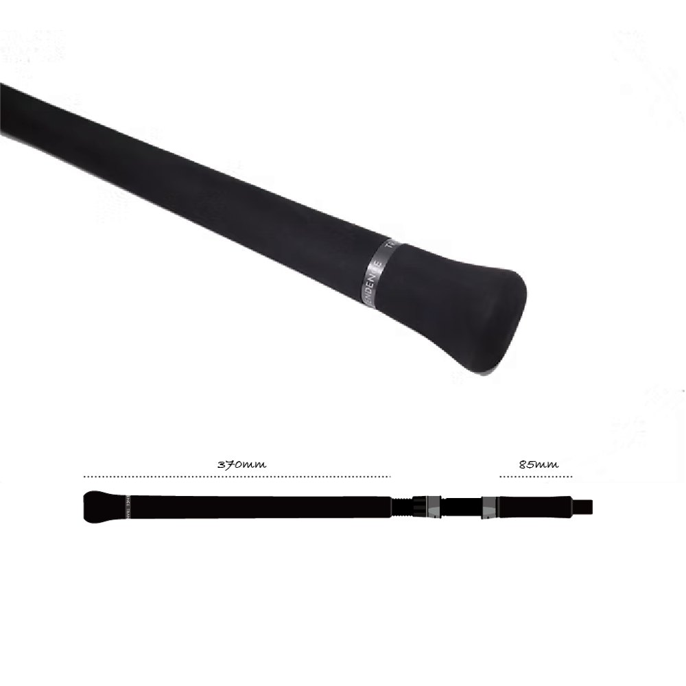
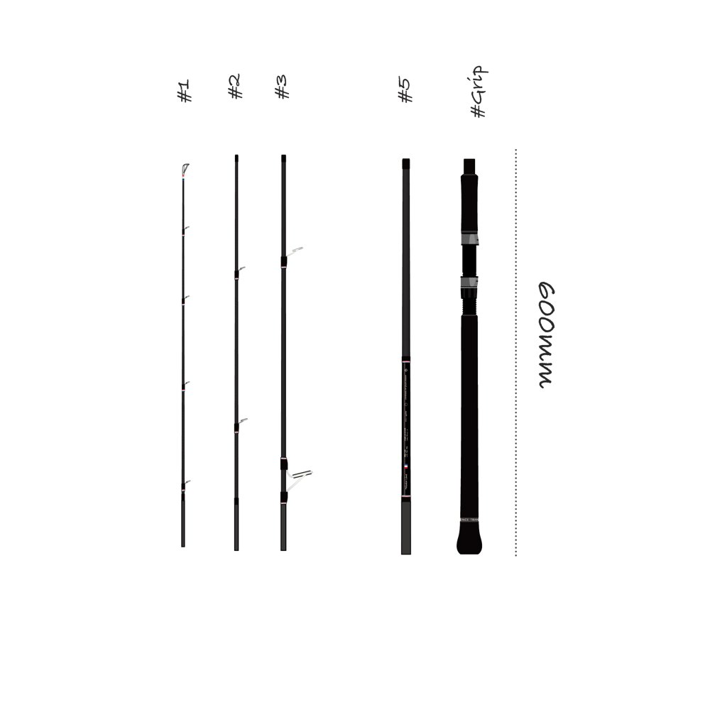
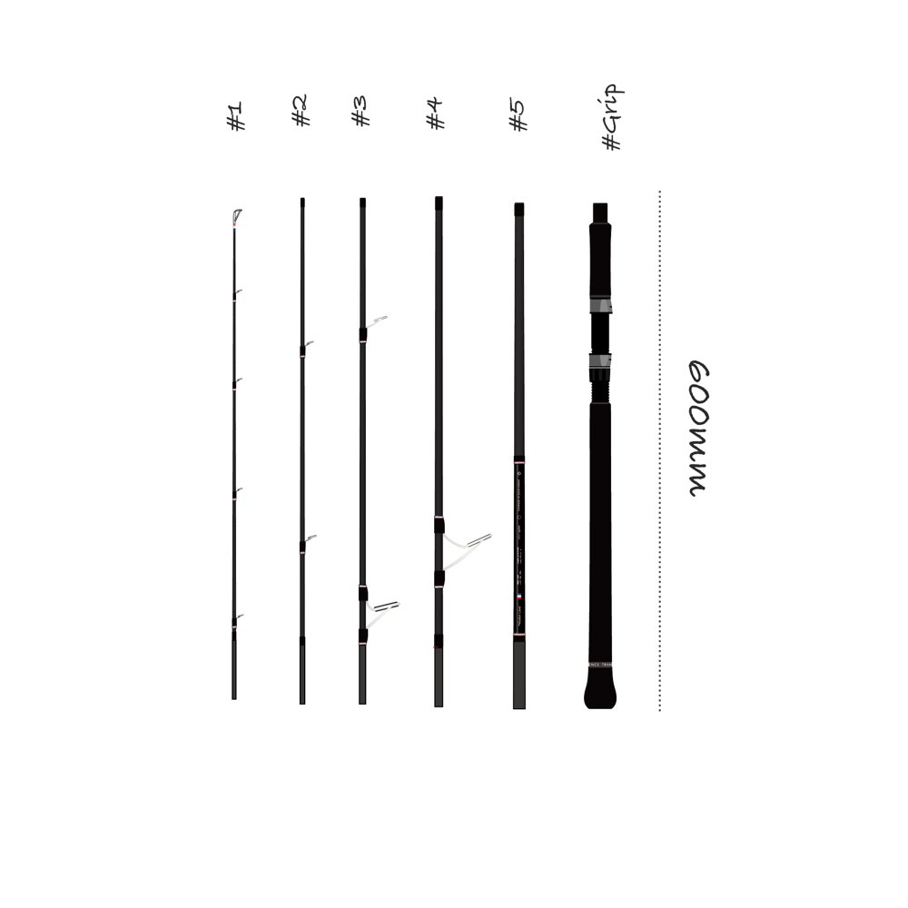
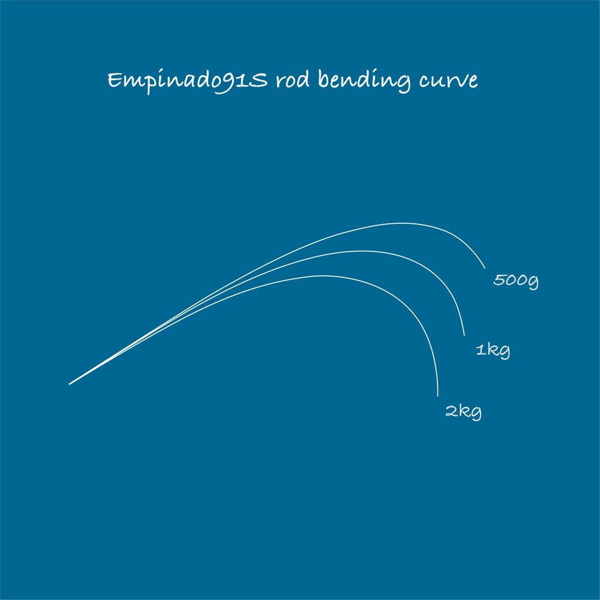
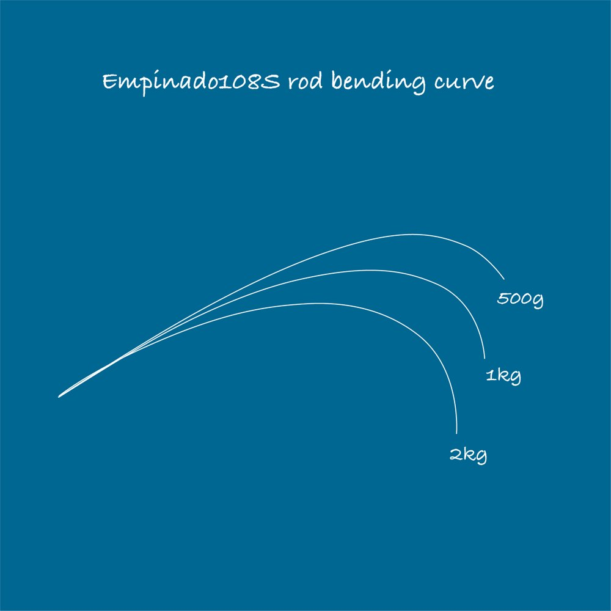

エンピナード91S+
（Empinado91S+ Rev2.0）
エンピナード91S+は、パックロッド専門ブランドTRANSCENDENCE（トランスセンデンス）の、ヒラスズキ用スピニングロッドです。
9.1ftと10.8ftに組み替えられる2in1で、房総・伊豆・和歌山・鹿児島の磯でテストを重ねて作られました。仕舞寸法600mmにたためるので、バッグやライフジャケットに収めて、両手を空けたまま磯へ降りられるのが最大の特徴です。

画像出典:TRANSCENDENCE公式HP
スペック
- メーカー
- TRANSCENDENCE（トランスセンデンス）
- タイプ
- スピニングロッド（ヒラスズキ・2in1可変レングス）
- 長さ
- 9.1ft／10.8ft
- 継数
- 6ピース（9.1ftは5ピースで使用）
- 仕舞寸法
- 600mm
- 自重
- 212g（9.1ft）／260g（10.8ft）
- ルアー重量
- 12〜56g
- PEライン
- 1.2〜3号
- ガイド
- チタン・SiCガイド混合
- ターゲット
- ヒラスズキ・シーバスなど
- 価格
- 73,700円（税込）
▼今すぐチェック

エンピナード91S+の特徴
すべての「ヒラ師」の強い味方。磯ヒラのためのパックロッド
-
ヒラスズキに必要な張りのあるブランク
全体に張りのあるブランクで、振り抜けがシャープ。向かい風の中でもキャストしやすく、ジャンプをいなしてランディングまでスムーズに寄せられるバットを持つ。
-
偶数の6ピースで仕舞寸法600mm
10.8ftを6ピースにしたのは、奇数ピースだと2本にきれいにまとまらず、破損のリスクが上がるから。#1（ティップ）は他より20mm短く作られていて、たたんだときや移動のときに穂先を守る。
-
根回りで投げやすい短めのグリップエンド
青物兼用のロッドよりグリップエンドを短くして、根回りや磯での低弾道のライナーキャストをしやすくしている。長さはミリ単位でテストして決めた。

画像出典:TRANSCENDENCE公式HP
9.1ftと10.8ftの使い分け
| 長さ | 組み合わせ／自重 | 得意な場面 |
|---|---|---|
| 9.1ft | #1+#2+#3+#5+グリップ／212g | 張りとパワーが強み。14cm以上の大型ルアーや、コノシロ・ボラパターンの35g以上のルアーに。足場の低い磯や流れの強い場所、ボートでも |
| 10.8ft | #1〜#5+グリップ（#4を追加）／260g | ヒラスズキに特化した長さ。10cm前後の小型ルアーも投げやすく、掛けてからはしっかり曲がって魚を寄せられる |

画像出典:TRANSCENDENCE公式HP

画像出典:TRANSCENDENCE公式HP
9.1ftと10.8ftに、500g・1kg・2kgの荷重をかけたときの曲がり方です。

画像出典:TRANSCENDENCE公式HP

画像出典:TRANSCENDENCE公式HP
※TRANSCENDENCE公式HPの記載より。仕舞寸法はどちらも600mmです。
エンピナード91S+の使い方
主に使うルアーは、100〜150mmのフローティングミノー・シンキングミノー・トップウォーター。風速10m/sの状況でも、バットとベリーにルアーの重さを乗せてライナーで投げられます。
9.1ftはグリップエンドが長めなので、8ft後半のような感覚で振れます。ミノーをジャークしてワイドに飛ばし、リアクションで食わせる釣りが得意で、サーフのヒラスズキや河川のマルスズキ・アカメ、オフショアのライトキャスティングにも使えます。
エンピナード91S+がおすすめの人
磯のヒラスズキを狙う人におすすめです。
ヒラスズキの釣りは、山道を下り、崖を降り、ときには海を泳いで磯へ渡ることもあります。ロッドは2〜3ピースが主流でしたが、エンピナードはロッドを持たずに両手をフリーにして、安全に磯へ入れるのが一番の強み。ドン深の絶壁から水深1m以下のシャローまで、点・線・面の釣りをバランスよくこなせます。
ワンポイント
磯への移動中は、ロッドを継いだまま手に持たないのが基本です。6ピースのままケースに入れてバッグに収め、釣り座に着いてから継ぐと、藪や岩でロッドをぶつけて折るリスクと、転倒のリスクを両方減らせます。公式でも、防水バッグや専用ケースに入れて運ぶことをすすめています。
▼今すぐチェック
エンピナード91S+とあわせてチェックしたいアイテム
-
 PZ-VN105S サラシニスタ
ポジドライブガレージ
詳細はこちら＞
PZ-VN105S サラシニスタ
ポジドライブガレージ
詳細はこちら＞
サラシの中で送り込めるヒラスズキ用のシンキングミノー。
-
 カレンテス82S+
TRANSCENDENCE
詳細はこちら＞
カレンテス82S+
TRANSCENDENCE
詳細はこちら＞
同じブランドの8.2ft/9.8ft。港湾や河川のシーバスならこちら。
-
 プルクラ62B+
TRANSCENDENCE
詳細はこちら＞
プルクラ62B+
TRANSCENDENCE
詳細はこちら＞
同じブランドのベイトのバーサタイルロッド。